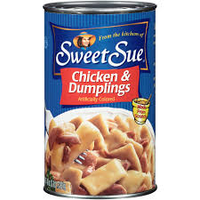
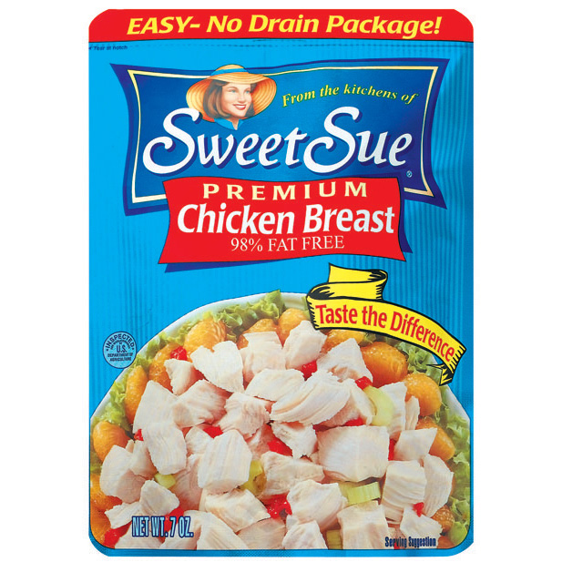
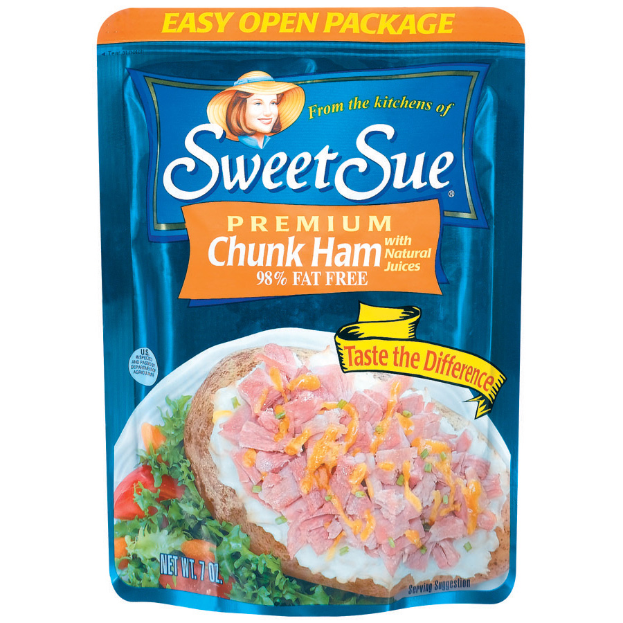

Sweet-Sues Canned Chicken
Welcome to the blog of Evan and Jonny
.jpeg)


Whole,Canned Chicken
December 4,2019
Cook a different way with Sweet Sue's Canned Whole Chicken
Evan Ray, December 5, 2019
Sweet Sue's Canned Chicken. The ideal meal for those not destined to cook. This tender, delicious morsel melts in your mouth. The only preparation required is to heat up the oven. Pour the chicken and the delicious broth into an oven pan and roast until sufficiently warm. The delicious broth has soaked into the meat, providing all the flavor necessary. You can make lots of recipes with it, such as creamed chicken and mushrooms. As far as canned food products go, this is the le creme de le creme.

Sweet Sues
Sweet Sues has been a trusted and loyal organization for over 40 years. Our workers and trusted farmers treat the chicken with only the best of care, to construct a wonderful canned meal.
Other Popular Products
-

Chicken and dumplings
-

Premium Chicken Breast
-

Premium Chunk Ham

Tags
Canned Classic White meat Chicken Sweet Sue Broth Meal Yummy Tasty Pre-cooked